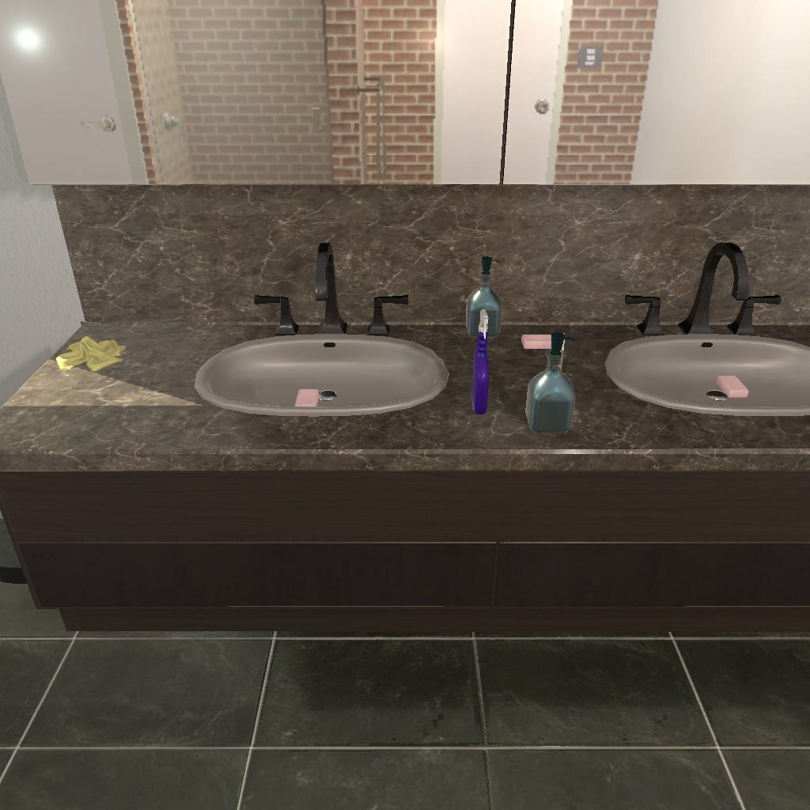

---------------------------------------------------------task: 27---------------------------------------------------------
--------------------------------------------------------------------------------------------------------------------------------------------------------------------
--------------------------------------------------------------------------------------------------------------------------------------------------------------------
Step:--------------------------------------------------------------------------6-------------------------------------------------------------------------------
----------------------------------------
VLM Prompt:
Image1:
Image2:
**Instruction**
1. Analyze the provided images to identify all visible household objects and compare the difference between images (e.h. whether the object is opened or not and taken on hand or not), focusing on those relevant to the task description "find two soapbottle and put them in garbagecan."
2. Use the analysis of images and the task hint "The agent must find an object of the desired type, pick it up, find the correct location to place it, put it down there, then look for another object of the desired type, pick it up, return to previous location, and put it down there with the other object." to answer the question: what is the most reasonable action in the choices for the task description "find two soapbottle and put them in garbagecan"?
3. Decide and write the answer using the template: The answer is: (i): , where i is the real number. If there is no desired object in images, search every place based on **Initial Observation** to find the object. And if no one is exactly correct, choose a similar answer.
**Initial Observation**
You are in the middle of a room. Looking quickly around you, you can see countertop (1), sinkbasin (1-2), sink (1-2), garbagecan (1), drawer (1-2), toilet (1), handtowelholder (1)
**Answer Choices**
(1): go to sinkbasin 1
(2): go to sink 1
(3): go to garbagecan 1
(4): go to drawer 2
(5): go to sink 2
(6): go to sinkbasin 2
(7): go to toilet 1
(8): go to handtowelholder 1
(9): open drawer 1
(10): close drawer 1
(11): examine drawer 1
**Answer**
Let's think step by step by following the instructions.
----------------------------------------
----------------------------------------
Original Response:
1. In both images, we can see two soap bottles on the countertop between the two sink basins. There is no visible difference between the two images regarding the soap bottles (they are not opened or being held).
2. Based on the task description "find two soapbottle and put them in garbagecan," and the hint provided, the most reasonable action would be to first pick up the soap bottles. However, none of the answer choices includes picking up an object. Therefore, we need to choose the action that gets the agent closest to the soap bottles to be able to pick them up.
3. Using the template provided, the most reasonable action from the answer choices to accomplish the task of finding two soap bottles and putting them in the garbage can would be to go to the location where the soap bottles are, which is the countertop between the two sink basins. Since there is no specific choice for "go to countertop," we should choose the closest option.
The answer is: (1): go to sinkbasin 1. This choice brings the agent closest to one of the soap bottles on the countertop.
----------------------------------------
----------------------------------------
>>> Refine Original VLM Response and Get Pure Action: go to sinkbasin 1
----------------------------------------
-----------------------------------------------------------------
Running time: 8.910258769989014 seconds
Total Money: 13.971849999999998
-----------------------------------------------------------------
-----------------------------------------------------------------
Text Observation:You arrive at loc 1. On the sinkbasin 1, you see a faucet 1, a cloth 1, a soapbar 1, and a soapbottle 2.
-----------------------------------------------------------------
UNSUCCEED